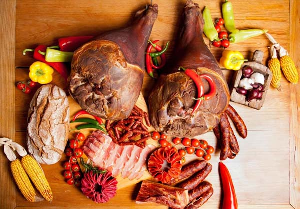

Magyarországon a disznótor
Receptek

katints a képre
Magyarországon a disznótor,rendszerint télen,a karácsony előtti,illetve a januári hideg napokban a parasztháztartások egyik legnépszerűbb tradíciója,amely manapság a városi emberek számára népszerű turisztikai és hagyományőrző élménnyé vált.
A disznóvágás vagy disznóölés a háznál nevelt sertés,hagyományos levágása,a hús feldolgozása,és az ezt követő hagyományos disznótoros:
töltött káposzta fogásokból rendezett vacsora.A falusi népszokások közül az egyik legtöbb embert megmozgató közösségi esemény volt.Általában a disznóhizlalás befejezését a hideg téli időszakra időzítették,hogy a romlékony hús egy részét lefagyasztva hosszabb ideig is eltarthassák.